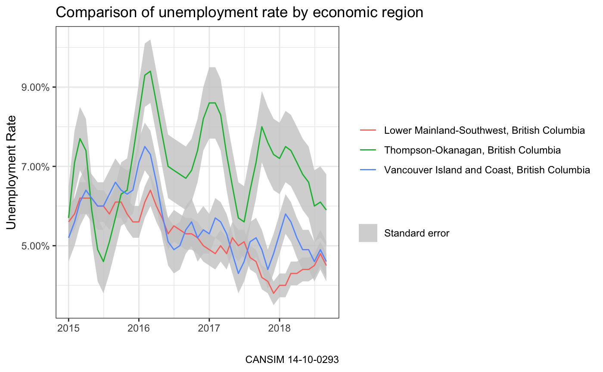

vignettes/listing_cansim_tables.Rmd
listing_cansim_tables.RmdThis vignette details how to use the internal table search functions in the cansim package with a simple example using employment data for economic regions in British Columbia.
As the table search function requires a full scrape of Statistics Canada’s data repository webpages, generating this list can be quite slow so a saved list of tables is included with the package. As Statistics Canada adds additional tables and data products, the list that comes with the package will become out of date and will require refreshing. Tables can be refreshed by specifying refresh=TRUE when calling list_cansim_tables. The full list of tables can be cached locally to avoid delays and prevent unnecessary web scraping. This can (and should) be enabled by setting options(cache_path="your cache path") option so that table information is cached across R sessions.
Calling list_cansim_tables returns a data frame with useful metadata for available tables. There are 21 fields of metadata for each table including title, in English and French, keyword sets, notes, and table numbers.
library(cansim)
names(list_cansim_tables())
#> [1] "title" "title_en"
#> [3] "title_fr" "keywords_en"
#> [5] "keywords" "keywords_fr"
#> [7] "notes" "notes_en"
#> [9] "notes_fr" "state"
#> [11] "subject" "date_published"
#> [13] "frequency" "revision_id"
#> [15] "time_period_coverage_start" "time_period_coverage_end"
#> [17] "metadata_created" "metadata_modified"
#> [19] "url_en" "url_fr"
#> [21] "cansim_table_number"The appropriate table can be found by subsetting or filtering on the properties we want to use to find the appropriate tables.
library(dplyr)
#>
#> Attaching package: 'dplyr'
#> The following objects are masked from 'package:stats':
#>
#> filter, lag
#> The following objects are masked from 'package:base':
#>
#> intersect, setdiff, setequal, union
list_cansim_tables() %>%
filter(grepl("Labour force characteristics",title), grepl("economic region",title)) %>%
select("cansim_table_number","title")
#> # A tibble: 2 x 2
#> cansim_table_number title
#> <chr> <chr>
#> 1 14-10-0090 Labour force characteristics by province, territory …
#> 2 14-10-0293 Labour force characteristics by economic region, thr…The search came up with two tables. In this example we are interested in the unemployment rate for 2015 onwards for the Lower Mainland, Vancouver Island, and Okanagan economic regions from the Labour Force Characteristics table. We use the tidyr package here to reshape data from a long format to a wider format.
library(tidyr)
selected_table <- "14-10-0293"
data <-get_cansim(selected_table) %>%
normalize_cansim_values() %>%
filter(grepl("Mainland|Vancouver Island|Okanagan", GEO),
Date>=as.Date("2015-01-01"),
`Labour force characteristics`=="Unemployment rate") %>%
select(Date, GEO, Statistics, VALUE) %>%
spread(key="Statistics", value=VALUE)
#> Accessing CANSIM NDM product 14-10-0293 from Statistics Canada
#> Parsing data
#> Folding in metadataWe can visualize then results with ggplot2.
library(ggplot2)
ggplot(data, aes(x=Date, group = GEO,y=Estimate)) +
geom_ribbon(aes(ymin=Estimate - `Standard error of estimate`,
ymax=Estimate + `Standard error of estimate`, fill=""),
alpha=0.8) +
geom_line(aes(color=GEO)) +
scale_y_continuous(labels=scales::percent) +
scale_fill_manual(name = "", values="grey80", label="Standard error") +
theme_bw() +
labs(title = "Comparison of unemployment rate by economic region",
y = "Unemployment Rate",
x = "",
color = "",
caption=paste0("CANSIM ", selected_table))